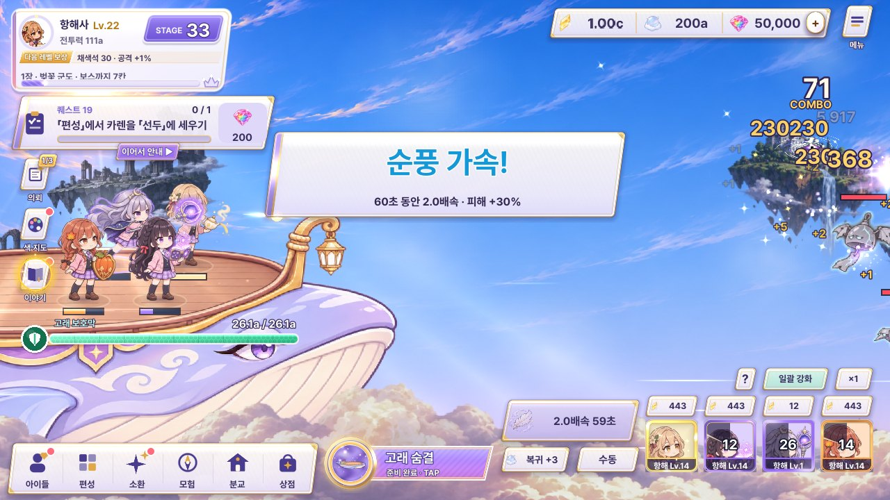

스테이지 정화 (#15) · 채색 폭주 (#17) · 순풍 가속 (#30)
세 순간이 지금은 모두 같은 흰 띠(가운데 판)로 나옵니다. 시안마다 세 순간을 한 가족으로 묶되 서로 다른 색 · 모양 · 자리를 줍니다 — 정화 = 금빛 · 라벤더(짧게 1~1.5초), 채색 폭주 = 자홍 · 금 물감(8초, 공격 ×1.5), 순풍 가속 = 하늘빛 바람(60초, 2배속 · 피해 +30%). 무지개는 신화 등급 전용이라 여기서는 쓰지 않았습니다. 바탕은 시안 B를 적용한 지금 전투 화면 캡처이고, 그 위의 새 연출만 CSS로 움직입니다.
지금 게임
정화 · 폭주 · 순풍이 모두 가운데 같은 모양의 판으로 떠서 서로 구별이 안 되고 전투를 가립니다.



A · 붓과 물감 — 아틀리에답게 화면에 직접 칠하기
정화는 붓 한 획 위에 「CLEAR」를 쓰고 잿빛 섬에 색이 번지며 빛물감 방울이 색 지도로 날아가고, 폭주는 위 가장자리에 자홍 · 금 물감이 흘러내리며 콤보 자리가 물감 엠블럼(8초 고리)이 되고, 순풍은 흰 붓 바람결이 화면을 가로지릅니다.
정화 (#15)1.2초 · 붓 → 글자 → 섬 채색 → 방울이 색 지도로
채색 폭주 (#17)콤보 40에서 콤보 숫자가 물감 엠블럼으로 터지고, 흰 고리가 8초 동안 줄어듦 · 맞은 적에 물감 자국
순풍 가속 (#30)시작할 때 「순풍 ×2」 붓글씨가 바람에 밀려 지나가고, 60초 동안 바람결 + 버튼이 하늘빛 시간 막대로
B · 하늘 날씨 — 세 순간을 하늘의 날씨 변화로
정화는 구름 사이로 햇살이 비치며 위에서 작은 쪽지 「33 정화」가 내려오고 STAGE 숫자가 넘어가며, 폭주는 노을빛 물감 소용돌이 + 맨 위 자홍 시간 줄, 순풍은 구름이 빠르게 흐르고 버튼 옆 돛이 시간만큼 채워집니다.
정화 (#15)햇살 + 섬 채색 + 위에서 내려오는 쪽지, 가운데는 비워 둠
채색 폭주 (#17)하늘이 노을 자홍으로 물들고 적 쪽에 물감 소용돌이 · 맨 위 줄이 8초 동안 줄어듦
순풍 가속 (#30)가장자리 하늘빛 + 바람 줄 + 아래 구름이 2배로 흐름 · 돛이 60초 시간
C · 가장자리만 — 전투 한가운데는 절대 가리지 않기
정화는 화면 테두리가 금빛으로 한 번 빛나고 STAGE 칸에 「정화」 도장이 찍히며, 폭주는 테두리 전체가 자홍 물감 띠가 되어 시계 방향으로 8초 동안 줄고, 순풍은 양옆 가장자리에 하늘빛 바람 줄이 흐르며 버튼이 시간 막대가 됩니다.
정화 (#15)테두리 금빛 0.6초 + STAGE 칸 도장 · 다음 칸 숫자로 바로 넘어감
채색 폭주 (#17)테두리 물감 띠 = 남은 시간, 오른쪽 세로 글자만
순풍 가속 (#30)양옆 바람 줄 + 버튼이 시간 막대